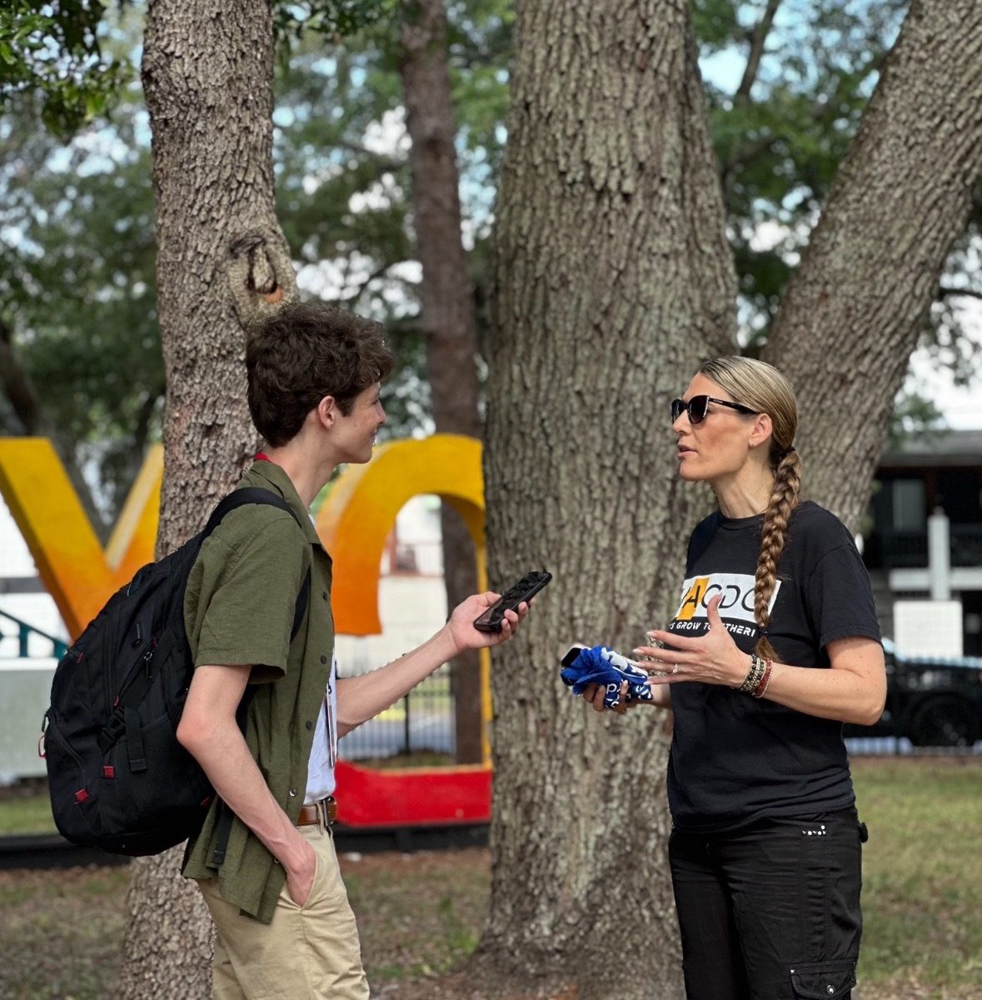

Research and Development

May 1
Welcome to Lesson Two of CitrusTV News training! Now that your pitch has been approved, it’s time to take the next step—setting up your story and securing interviews.
In this lesson, we dive into the art of outreach and communication. Learn practical strategies for contacting sources, including when to call versus email, how to follow up effectively, and why tailoring your approach to each individual is key.
We also cover the importance of professionalism, transparency, and respecting boundaries when reaching out.
You’ll get tips on choosing the right interview locations, working around scheduling challenges, and building strong relationships with your sources.
We also break down how to structure a well-rounded story by including multiple perspectives—official sources, character-driven storytelling, and opposing viewpoints—to create balanced, compelling reporting.
This lesson explores how to handle common challenges like unresponsive sources, cancellations, and sensitive topics, including when (and when not) to consider anonymity in your reporting.
We introduce “event coverage,” a common type of story at CitrusTV, outlining its advantages and limitations, and how to approach it with a critical eye to avoid turning news into promotion.
🎥 By the end of this lesson, you’ll be prepared to confidently set up your story and gather everything you need before stepping behind the camera in the next phase of production.
#newsroom #pitching #newslife #journalism #FirstAmendment